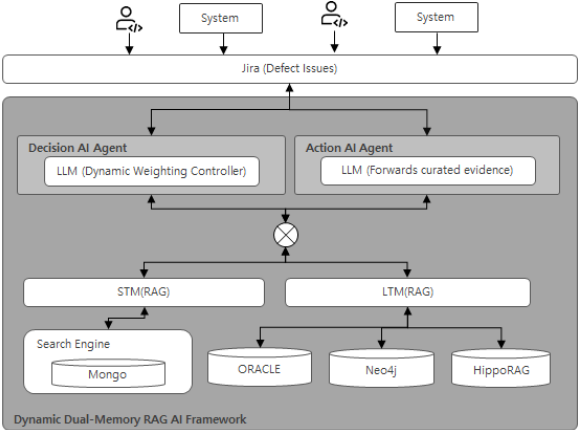

统一的 AI 驱动验证：融合 Spec-RAG、记忆网络与生成式 AI
论文针对 SoC 开发中设计规格、验证计划与测试结果分散在 Confluence、Perforce、Jira、CI 等不同仓库、可追溯性难以人工维护、调试依赖'部落知识'的问题，提出一种动态混合 AI 验证分析框架。方法上将 HippoRAG 知识图谱检索、双记忆 RAG（STM/LTM）与 LLM-数据库推理结合：结构化设计与计划元数据存于 Oracle RDB（LTM），非结构化测试结果与错误日志存于 MongoDB（STM），并用 Delta-edge 与 provenance-aware graph 捕获跨版本变更；决策模型（MiniMax-M2）按开发阶段（ML1-ML4）动态调整 STM/LTM 检索权重，动作模型（GLM-4.6）基于筛选证据做根因推理。基于 34 周真实 SoC 项目数据、398 个 issue 的评估显示，估计调试时间最多降低 27%，信息不匹配类问题平均效率提升 75%，需修改 RTL 的问题平均提升 30%。消融实验证明双记忆分离、动态加权与 LLM 决策逻辑均有显著贡献，但在早期阶段或关系稀疏数据下性能会下降。
SoC 项目中设计规格、验证计划、测试结果与 issue 历史分散在不同仓库和格式中，设计块/IP 异步版本化、测试计划持续更新，导致需求到验证的可追溯性难以人工维护；传统排错严重依赖人工分析和'部落知识'，调试质量不一致、问题解决周期长；朴素 RAG 未考虑 SoC 数据的时间易变性以及需求-设计-验证资产-问题历史之间的结构关系。
提出 Dynamic Dual-Memory RAG 框架：以 HippoRAG 将知识组织为知识图谱，通过 Delta-edge（Δ 变更边）与 provenance-aware graph 捕获规格/设计/验证工件间的跨版本变更并支持可审计推理；结构化工件（Design Block/IP 版本、验证计划）存 Oracle RDB 作为 LTM，非结构化测试结果与错误日志存 MongoDB 作为 STM；决策模型（MiniMax-M2）分析用户查询判定 SoC 开发阶段（ML1-ML4），Memory Controller 据此动态调整 STM/LTM 检索权重（高变更期 STM 0.7~0.8，稳定期 LTM 0.6~0.8），动作模型（GLM-4.6）基于筛选证据推理；并结合内部 RTLCIC（RTL Issue Checker）系统跟踪 issue 检出版本与计划修复版本，消除跨 RTL 版本的重复调试。
基于 34 周真实 SoC 开发数据、398 个 issue（涵盖 connection、function、false-spec、testbench 失败等类别）的评估，估计调试时间最多降低 27%
Type 1（简单信息不匹配/缺失，如 memory map 或 SFR 设置的规格差异）：效率提升 60-90%，平均 75%
Type 2（需修改 RTL 的错误）：效率提升 10-50%，平均 30%；Spec Fixed 类案例（如 EVT0 阶段 Block A 的 SYSREG 连接错误，EVT0_ML2_DEV06 检出、EVT0_ML2_DEV09 修复）调试时间降至接近零
消融实验：静态 RAG 在高变更期（ML1/ML2）处理 false alarm 表现差（107 个 issue），常检索到过时数据；在稳定期（ML3/ML4）因缺乏高 LTM 权重策略，相比完整系统有约 27% 的性能差距
性能在早期阶段或关系稀疏的弱关联数据集上下降，表明关系密度强烈影响推理效率
不同于依赖电子表格或形式模型的传统可追溯性方法、以及未考虑 SoC 数据时间易变性与结构关系的朴素 RAG，本文将生成式 AI、KG-based RAG（HippoRAG）、RDB 与 NoSQL 组合成统一混合流水线，同时处理结构化与非结构化数据；并按 SoC 开发阶段（ML1-ML4）动态调整 STM/LTM 双记忆检索权重，使系统在高变更期优先数据新鲜度、在稳定期优先关系密度，实现可解释的跨版本可追溯与根因分析。
相关度级别：high
命中能力域：2.4 设计验证方法学 | 2.7 EDA/验证自动化与 AI 辅助
理由：论文直接命中 2.7（LLM/AI 辅助验证与 bug 分析、验证流程自动化）与 2.4（bug triage 与 debug 方法学、回归数据分析）。团队在 LPDDR/DDR5/MRDIMM/HBM4/UCIe 等 IP 交付中同样面临 spec-验证计划-回归结果-issue 之间跨版本可追溯性维护、false alarm 甄别与根因分析等痛点，且团队正在沉淀回归与 CI 自动化能力；论文的动态双记忆 RAG、Δ 变更追踪与 issue 版本跟踪（RTLCIC 思路）可直接借鉴到 IP 级回归调试与 issue triage 自动化。需注意论文场景是 SoC 级开发（含 ML1-ML4 阶段划分与 chip 级集成），迁移到 IP/子系统集成场景需重新定义阶段与数据源。
建议动作：深入精读并做内部分享
统一的AI驱动验证：结合Spec-RAG、记忆网络与生成式AI
Seonghee Yim 1 Insoo Jang 2 Hanna Jang 3 Youngsik Kim 4
摘要 - 在片上系统（SoC）项目中，由于频繁的设计迭代和不断演进的需求，在设计规格、验证计划与测试结果之间维持可追溯性十分复杂。我们提出了一种实用的混合AI框架，整合了HippoRAG（Hippocampal Retrieval-Augmented Generation）、双记忆RAG（STM/LTM）以及大语言模型（LLM）-数据库推理，作用于异构数据源：Oracle RDB中的结构化设计与计划元数据，以及MongoDB中的非结构化测试结果。该框架能够动态适应SoC开发的各个阶段——既处理以规格演进为主导的高变更时期，也应对专注于质量收敛的稳定阶段。在一个代表性SoC项目上的评估表明，该框架在数据丰富的场景中实现了接近人类的可追溯性准确率，并能通过根因分析缩短调试时间。在早期阶段或关系链接较弱的数据稀疏数据集中，性能会有所下降，这表明关系密度对推理效率有显著影响。这些发现展示了在工业SoC设计中采用AI辅助验证分析的一条现实且渐进的路径。
现代片上系统（SoC）开发通过设计规格、验证计划和回归环境的多个版本持续演进。
模块或IP以异步方式完成版本管理与发布，而测试计划和测试代码则持续更新。因此，需求到验证的可追溯性越来越难以通过人工方式维护，尤其是当各类工件分散存储于彼此独立的数据库和格式之中时。
为应对这一挑战，我们提出了一种混合式人工智能（AI）可追溯性框架，该框架结合了：
当设计人员和验证工程师需要旗舰级SoC开发阶段中已生成并使用的各类数据时，出于以下三个原因，他们很难获得准确的数据、数据的历史信息以及相关的分析信息。其一，设计模块（Design Block）与IP结构的多样性；其二，在由复杂且数量众多的验证数据验证单元所使用的非标准化开发环境中缺乏对场景的管理；最后，开发人员分散于多个组织之中——这些都是主要因素。
本文提出一种动态混合AI验证框架（Dynamic Hybrid AI verification framework），该框架根据生成式AI在各开发阶段所产生的数据的关系、频率与特性，将其存储并配置于检索增强生成（RAG）、关系数据库（RDB）和NoSQL之中，从而实现对SoC的推理。为此，本文介绍了一种基于生成式AI（大语言模型，LLM）与HippoRAG的混合框架，该框架将结构化数据库推理与语义图遍历相结合，提供可解释的可追溯性。该框架捕获设计、测试与规格工件之间基于Δ的变更信息，在短期记忆（Short-Term Memory, STM）与长期记忆（Long-Term Memory, LTM）系统的支持下，实现可解释的跨版本推理。
传统方法依赖于电子表格或形式化模型，使得可追溯性难以规模化。基于自然语言处理（NLP）的方法很少涉及层次化硬件结构，也难以整合寄存器传输级（RTL）完整性与验证结果。与以往技术不同，检索增强生成（RAG）对于基于文档的推理十分有效，而面向结构化数据的数据库+LLM（DB+LLM）方法也已应运而生。我们的工作将生成式AI与基于知识图谱（KG）的RAG、关系数据库（RDB）以及NoSQL结合在一条混合流水线中，从而实现对结构化与非结构化数据的可追溯性与调试。本文所综述的验证在整个生命周期内发生的变更数量信息，以及拟采用的数据库系统如下所示。
设计过程经历两个典型阶段：
以下内容解释了论文中所使用的技术术语的定义，以及其在上下文使用中的含义。
定义：Delta-edge（Δ 边）是指知识图谱中表示节点之间的关系或属性随时间发生的变化（delta）的边。这些边捕获动态更新，例如当某个属性值被修改、引入新的依赖关系，或某个关系被移除时。
上下文解释：Delta-edge 是知识图谱中一种特殊的边，用于显式表示系统状态中的某项变化（即"delta"），例如对设计规范、硬件组件或验证计划的修改。它不仅仅是两个节点之间的静态链接，而是一个时间性与语义性的连接器，能够捕获某项变更的“之前”与“之后”状态，以及关于该变更本身的元数据（例如，由谁做出该变更、何时做出以及为何做出）。
定义：溯源感知图（provenance-aware graph）是一种知识图谱，它显式地跟踪每一条信息（节点或边）的来源与历史，包括它来自何处、是如何被推导出来的，以及哪些过程或数据对其产生了影响。
上下文解释：每一个生成的答案都可以通过回溯至原始数据源来进行审计。幻觉（hallucination）现象得以减少，因为模型必须借助图中一条可验证的路径来论证其每一项陈述。
概念：HippoRAG（Hippocampal Retrieval-Augmented Generation，海马体检索增强生成）是一种新方法，它为大型语言模型（LLMs）提供了一种受人类大脑（具体而言是海马体）启发而成的长期记忆形式。它并非将信息存储在孤立的块中，而是将知识组织成一个称为知识图谱（KG）的相互连接的网络。
推理：其主要目标是提升人工智能（AI）回答那些需要多步推理（即跨多个文档关联事实）的复杂问题的能力。传统 RAG 难以在不同文档块之间建立信息连接。HippoRAG 利用知识图谱，以单一而快速的步骤高效地查找并整合所有相关信息，正如人脑将相关记忆联系起来一样。与旧方法相比，这使其在处理复杂任务时更快、成本更低且更加准确。
在 AI 与认知科学中，双记忆层概念区分了两种信息存储类型，这与人脑中的情况非常相似：短期记忆（STM）和长期记忆（LTM）。
概念：这是 AI 在当前对话或任务中的“工作草稿板”。它保存着在当下做出连贯响应所需的临时上下文。
概念：这是 AI 的永久档案库，旨在跨多个会话存储知识、偏好和历史交互记录。
STM 帮助 AI 保持对当前对话的专注，而 LTM 则为其提供一个持久的、不断增长的知识库，该知识库能够跨时间持续存在，从而实现持续学习和个性化交互。
我们提出的框架根据 SoC 开发阶段所创建和生成的输出与数据的特征，动态调整 Dual-Memory RAG 的搜索策略权重。我们详细描述了 SoC 各开发阶段对应的特征以及所提出的权重模型，并如下文所述，为每种记忆类型配置 RAG 与 DB 相关的系统和工具。
规格说明、设计、验证计划等频繁变更，因此快速的测试执行与调试工作正活跃开展。
短期记忆（STM）权重高（0.7 ~ 0.8）
长期记忆（LTM）权重中等（0.2 ~ 0.3）
基于逻辑新鲜度的发现优先：大语言模型（LLM）对从 MongoDB（STM）中提取的最新非结构化测试结果和错误日志进行推断。例）“当前设计的 A 功能是否存在运行错误？”
功能规格说明变更极少、多个模块的验证场景已完成、复杂且顽固的缺陷以及边界情况（corner case）的调试
STM 权重低（0.2 ~ 0.4）
LTM 权重低（0.6 ~ 0.8）
基于逻辑关系密度的搜索优先：LLM 推断出从 Oracl RDB（LTM）中提取的设计、计划与需求之间的大部分结构性和长期关系。例）“该缺陷的根本原因是什么？”在分析某一特定测试中出现的间歇性缺陷时，该框架会搜索 LTM，以全面比较与该测试相关的所有需求、设计变更历史以及过去类似的失效模式。
[SOR/HDD 规格] → [设计模块/IP 版本] → [验证计划] → [测试结果] → [问题]
当两者结合使用时，STM 提供即时性，而 LTM 则确保历史一致性与可解释性。
该框架结合了基于 Δ 的知识捕获、基于记忆的推理以及多模态数据库查询。
结构化工件存储在 Oracle 中。
关键表包括：
| Table | Example Columns | Description |
|---|---|---|
| PROJECT_OWNER | REQ_ID, REQ_DESC, SPEC_SECTION, VERSION, OWNER_TEAM | Master requirement index. |
| TEST_PLAN | PLAN_ID, BLOCK_NAME, FEATURE_TAG, TESTCASE_NAME, MATURITY_LEVEL | Verification plan metadata for each block. |
| DESIGN_BASELINE | RELEASE_TAG, DESIGN_REV, SPEC_VERSION, MATURITY_STAGE | Mapping between design releases and specification versions. |
| MATURITY_STATUS | BLOCK_NAME, DESIGN_STAGE, APPROVAL_FLAG, TIMESTAMP | Tracks design maturity level and approval status. |
| Table | Example Columns | Description |
由大语言模型（LLM）层生成的示例查询：
SELECT PLAN_ID, FEATURE, SUBFEATURE, OWNER, PRIORITY FROM TEST_PLAN WHERE BLOCK_NAME = 'DMA' AND DESIGN_VERSION = 'EVT0_ML3_DEV05';
| Collection | Key Fields | Description |
|---|---|---|
| test_results | run_id, block, status, timestamp, release_tag | Regression outcome for each test run. |
| coverage_runs | run_id, block, coverage_rate, feature_tag | Coverage metrics captured per regression. |
| logs | log_id, test_name, summary, error_trace | Execution logs and error traces for debugging. |
| Collection | Key Fields | Description |
db.test_results.find({ project: "S5EXXXX", final_result: "FAILED", version: RegExp("EVT0_M L3_DEV04|EVT0_ML3_DEV03", "i"), test_name: RegExp("(?=.*abox)(?=.*aud)", "i")})
在实际应用中，这些工件分散存储于不同的存储库中（Confluence、Perforce、文件服务器、Jira、CI 系统），导致难以可靠地追溯故障原因。
传统的故障排查严重依赖人工分析和“部落知识”，导致调试质量参差不齐、问题解决周期漫长。尽管 RAG（Retrieval-Augmented Generation，检索增强生成）已成为一种颇具前景的技术，但朴素的 RAG 方法既未考虑 SoC 数据的时间易变性，也未考虑需求、设计、验证资产与问题历史之间的结构化关系。为解决这些问题，本文提出了一种动态双记忆 RAG 人工智能框架（Dynamic Dual-Memory RAG AI Framework），该框架集成了：

本节使用来自实际片上系统（SoC）开发项目的实证数据验证所提出的思想。我们首先描述所提出的概念验证（PoC）框架内的数据流水线结构，然后通过真实世界的数据示例展示侧重于效率提升的验证结果。
为了建立基线并评估所提出模型的有效性，我们对显著的数据变化和更新周期开展了静态分析。所分析的数据集包括设计数据（规格说明、RTL）和验证数据（验证计划、测试平台）。最终仿真结果因其属于结果性数据而被排除在外；作为替代，我们纳入了由这些数据集触发的 Jira 问题数据。Jira 记录提供了缺陷解决的详细操作历史。通过将问题原因与"Time-to-Resolve"以及数据依赖关系相关联，我们量化了所提出框架的影响。
为此，我们采用了 RTLCIC（RTL Issue Checker）系统，这是一款内部开发的工具。该系统通过跟踪“问题检出版本”（issue-detected versions）与“解决计划版本”（resolution plan versions）来管理设计缺陷的固定标签，并在模块发布过程中充当门控机制。
类型 1：简单信息不匹配/缺失（60 - 90%：平均效率提升 75%）
该框架通过分析所提供的元数据，能够有效识别误报。当验证工程师基于被误解的信息报告问题时，系统可利用有据可依的数据实现即时解决。此类错误主要涉及规格差异，例如存储器映射或特殊功能寄存器（SFR）设置，并被归类为"False Alarm"或"Spec-Out"问题。
类型 2：需要修改 RTL 的错误（10 - 50%：平均效率提升 30%）
此类错误视开发成熟度而定，会以功能失效的形式出现，并被归类为 Spec Fixed、RTL Issue Fixed、Maturity Issue 和 RTL Issue Workaround。这些错误的出现频率和数据生命周期随开发阶段而异。
案例研究（Spec Fixed 类型）：在模块或 IP 的芯片级集成过程中，错误往往源于偏离规格的不正确端口声明。此外，即使在后续发布版本中已被解决，冗余错误仍常常残留在较旧的版本中。所提出的系统可将此类情况的调试时间缩短至接近于零。实现示例：通过利用 RTLCIC 系统跟踪目标修复版本，我们消除了跨不同 RTL 版本的低效重复运行。例如，EVT0 阶段"Block A"中出现的一个 SYSREG 连接错误在 EVT0_ML2_DEV06 版本中被检出，并在 EVT0_ML2_DEV09 版本中得到解决。
质量贡献：数据驱动的可追溯性确保，若设计中未发生任何变更且不存在已更新的测试结果，该问题将被标记为持续存在。这消除了验证“盲区”，并显著提升了整体验证质量。
| 0 | 1 | 2 | 3 |
|---|---|---|---|
| ML1 | Highest(16) | STM ↑ | frequent diffs, unstable logs |
| ML2 | High(10) | STM > LTM | active feature rollout |
| ML3 | Moderate(6) | LTM ↑ | structural & relational issues |
| ML4 | Low(2) | LTM > STM | convergence & verification closure |
| 0 | 1 | 2 | 3 |
| Stage | Type1 Issue Ratio | Type2 Issue Ratio | Debug Time Reduction |
|---|---|---|---|
| ML1/ML2 | 34/194 | 58/194 | 9~13% |
| ML3/ML4 | 73/204 | 77/204 | 11~27% |
| Stage | Type1 Issue Ratio | Type2 Issue Ratio | Debug Time Reduction |
为了量化每个组件的贡献，我们使用系统的四种变体进行了消融实验：
| Variant | Debug Time Reduction | Notes |
|---|---|---|
| Baseline | 0% | keyword/manual search |
| Static Dual Memory | 11% | no dynamic adaptation |
| Dynamic Weight (HippoRAG + STM/LTM) | 27% | no auto issue triage with graph reasoning |
| Variant | Debug Time Reduction | Notes |
结果表明，当动态策略被消融时，系统性能出现显著下降：ML1/ML2 中时效性（Recency）能力受损：在高变化阶段（ML1/ML2），静态 RAG 在解决误报（107 个问题）方面表现不佳。由于未能通过较高的 STM 权重优先考虑"Recency"逻辑，系统频繁检索到过时数据，导致在已过时的问题上持续投入调试工作。
ML3/ML4 中关系分析能力薄弱：在稳定阶段（ML3/ML4），静态 RAG 在复杂根因分析方面表现吃力。由于缺乏明确的高 LTM 权重策略，LLM 无法高效利用 RDB 中的"Design Relational Density"数据，与完整系统相比产生了约 27% 的性能差距。动态加权至关重要，因为不同的 ML 阶段具有根本不同的信息流。
本研究提出了一种动态双记忆检索增强生成（RAG）框架，旨在提升工业级片上系统（SoC）开发中的调试与验证效率。该框架集成了两个互补的记忆系统：
短期记忆（STM）：快速演变的数据，如回归日志、运行时错误和最近的代码差异；长期记忆（LTM）：稳定且具有关联性的信息，包括需求-规格-RTL-测试映射以及历史设计上下文
决策模型（MiniMax-M2）分析每个用户查询，以确定 SoC 开发阶段（ML1-ML4）及相应的数据变化特征。基于这些信息，记忆控制器（Memory Controller）动态调整 STM/LTM 检索权重，使系统能够适应 SoC 开发中不断变化的数据格局。随后，行动模型（GLM-4.6）利用筛选后的证据进行推理。我们的评估使用了 34 周的真实 SoC 开发数据，涵盖连接、功能、错误规格（false-spec）和测试平台（testbench）失败等多个类别的 398 个问题。仅基于历史数据的实验结果表明，所提出的系统：
将估计调试时间最多降低 27%。在错误规格、连接、功能和测试平台问题类别中带来最显著的改进。提升了检索证据的相关性和质量，尤其是在早期（ML1-ML2）易变环境和后期（ML3-ML4）结构性调试中。
消融实验结果证实，关键组件——双记忆分离、动态加权以及大语言模型（LLM）驱动的决策逻辑——均对整体收益有显著贡献。总而言之，所提出的框架有效捕捉了不同 SoC 开发阶段的差异化信息需求。通过将自适应记忆利用与基于 LLM 的推理相结合，它提供了一种实用的 AI 辅助验证方法，仅利用可用的历史数据即可显著加速调试工作流，而无需依赖时序或时钟域交叉（CDC）分析或错误类型分类。
未来的扩展工作将把该框架集成到持续验证工作流中，实现对日志、差异（diff）和执行轨迹的实时摄取。这将使系统能够在工程师开始人工分析之前，就主动检测异常并建议调试操作。
当前基于 Neo4j 的长期记忆（LTM）支持多跳依赖推理；然而，未来的研究可以探索图神经网络（GNN）或 graph transformer，以自动推断潜在的架构关系和故障传播路径，从而提升系统处理复杂 corner-case 问题的性能。
随着验证工程师与系统交互，反馈信号可用于优化检索排序、STM/LTM 权重以及决策模型的准确性。面向特定用户的调优可能进一步提升调试速度与相关性。
当前数据集的一个显著局限在于，问题类型最初是由工程师人工标注的。此类人工标注的数据往往存在不一致、类别漂移或错误分类——尤其是在 'uncategorized'、'misc.' 或 'false-spec.' 等模糊类别中。
未来工作将引入一个 AI 驱动的问题分类模块，该模块能够自动：
通过以一致的 AI 驱动标签取代含噪声的人工标注数据，系统不仅将提升决策模型的可靠性，还将改进 STM/LTM 权重、相似性检索精度以及跨开发阶段的性能预测。这一增强有望大幅提升鲁棒性，尤其是在分类模糊性历来最高的 ML1 和 ML3 中。